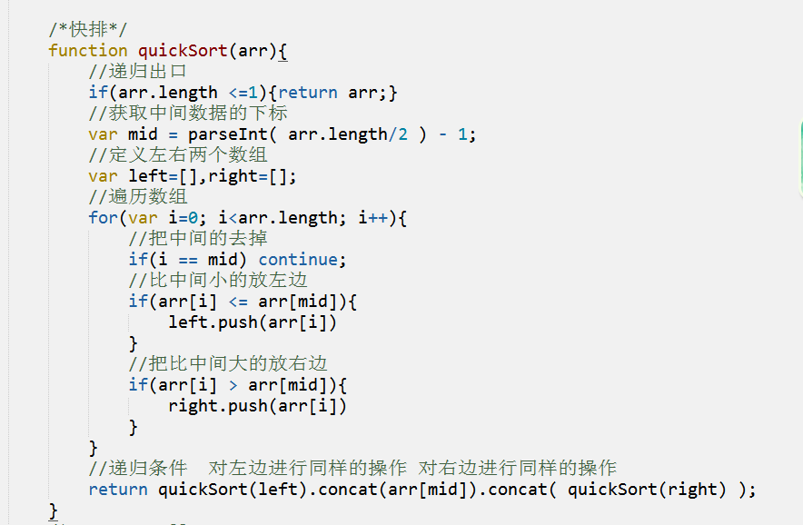

js--数组
作者： 千锋李文浩
时间： 17/01/12
补充
1、函数中的变量为什么要使用var定义？
避免污染（避免冲突）
function test(){
var sum = 0;
}
2、函数名的奥秘
1、普通函数的名字首字必须是小写
2、函数名使用驼峰命名法
3、怎么接收函数的返回值
function get1(){
return 1;
}
var num = get1();
现实场景
1、如何定义班里所有人的姓名？
2、定义一个功能，传入两个数，返回+-*/四种运算的值（不是字符串），怎么做？
function calculate(num1,num2){
var he = num1 + num2;
var cha = num1 - num2;
var chengji = num1 * num2;
var shang = num1 / num2;
return ?
}
思路
能不能定义一个盒子，把结果都放到这个盒子里面，然后返回盒子呢？
var hezi = 盒子;
把（num1+num2）的值放入盒子
把（num1-num2）的值放入盒子
...
return 盒子
数组概念（理解）
1、多个数据按一定顺序排列的集合
2、地址连续的一排用于存放数据的盒子
3、一般情况下数据类型相同（都是数字，或者都是字符串），也可以不同
数组的作用（理解）
1、存放多个数据
2、操作方便 （输出班里座位前10位同学的姓名）
定义数组（重）
1、使用关键字new（构造函数）
var arr1 = new Array();
var arr2 = new Array(1,2,3,4);
2、使用JSON形式(常用)
var arr3 = [];
var arr4 = [1,2,3,4];
数组深入（重点理解）
1、数组在内存中如何存放？
2、数据在数组中如何存放？
3、怎么访问数组中的元素？
怎么使用数组？（重）
1、 数组里面每一个盒子地址是连续的，每个盒子都有一个编号，从0开始
2、 每个地址的编号我们称为数组的下标
3、 使用数组下标访问数组元素 数组名字[数组下标]
var arr = ['a','b','c']; //从'a'的盒子开始编号，开始为0，'b'->1,'c'->2
console.log(arr[1]); //arr['1']
不能这么写 arr.1 报错
数组赋值（重）
1、初始化
var arr5 = [23,34,56];
2、某项赋值
arr5[1] = 12;
遍历数组（重）
0、什么遍历？
从变量的第一个元素开始，一直往后扫描，直到最后一个元素
从第一个元素到最后一个元素，逐个查找
1、遍历数组：从数组的第一个元素开始找到最后一个
var arr = [1,2,3,4,5];
2、数组的长度：
使用长度属性 var length = arr.length
3、遍历方法：
1、for方法
for(var i=0; i<length; i++){
console.log(arr[i]);
}
2、 for in组合
for(var i in arr){
console.log(arr[i]);
}
说明：i是数组的下标（属性），arr是数组
4、什么是属性
用于描述对象的
实战
1、定义自己前10天每天的消费，并计算总和
问题
1、怎么把1、2...100放到数组中？
2、找出并记录所有1-100之间7的倍数和包含7的数字
数组方法（重）
1、push：在数组最后添加一个或者多个元素（数组变大），返回添加后数组的长度（arr.length）
var family = ['laoba','laoma'];
family.push('哥哥'); //['laoba','laoma','哥哥']
2、pop：从数组最后取出一个元素（数组变小），返回的是数组的最后一个元素（取出的元素）
空数组使用pop方法，返回undefined，不会报错
family.pop(); //哥哥
3、unshift 和push相反，从数组的第一个位置的前面开始添加
family.unshift('爷爷'); //
4、shift 和pop相反 从数组的第一个位置开始取，返回取出的值（数组长度减小）
5、在原数组进行操作，会改变所操作的数组
实战
1、怎么把1、2...100放到数组中并求和？
2、找出并记录所有1-100之间7的倍数和包含7的数字
3、生成一副扑克牌（发牌功能）
4、扑克牌洗牌
数组方法2（重）
1、sort 排序方法
1、无参数 arr.sort()
不传参（比较的是ascii码）从第一位开始比
2、有参数 arr.sort(function(){});
如果想对数字大小进行正序或者倒序进行排列，需要往sort方法内传入回调函数（sort每次排序时的根据）,根据每次返回的值决定left和right的位置
arr.sort(function(left,right){
return left - right;//正序排（从小到大）
//return right - left; //倒序拍（从大到小）
//return Math.random()-0.5; //混合排序
});
返回 < 0 ,不交换a和b的位置
返回 > 0 ，交换a和b的位置
改变原数组
2、反转方法reverse
什么是反转？ 就是把数组的顺序调换一下
var arr = [1,3,5,2];
arr.reverse(); //[2,5,3,1]
改变原数组
3、concat 数组连接（拼接）
arr1.concat(arr2,arr3,...);
var arr = [1,2,3];
arr.concat([4,5],[6,7]); //[1,2,3,4,5,6,7]
arr//[1,2,3]
1、将多个数组连接在一起，返回新的数组
2、不改变原数组
4、join 将数组分割成字符串
arr.join('分隔符');//分隔符常用 - | & , 空 _
var arr = ['hello','酷狗'];
arr.join('');
不改变原数组
5、arr.toString() 将数组转化为字符串
var arr = ['hello','酷狗'];
arr.toString();// hello,酷狗
实战
1、扑克牌的创建、洗牌、发牌
2、随机点名程序
排序方法（重）
1、冒泡排序
每次两两交换，找一个最大的
53421 => 34215 => 32145 ... => 12345
2、选择排序
每次用第一个元素和后面的每一个元素做比较，比自己小就交换
3、快排
[10,12,31,24,53]
=> i=2 left = []; right = [];
left arr[i] right

二分查找
现在有一个已经排序好的数组，[1,2,34,56,123],用算法判断数组中是不是存在78
函数的值传递和引用传递（重）
1、值传递
值传递：传递的是基本数据类型的数据（数据不会发生改变）
原理：因为常量不可改变

2、引用传递
引用传递：传递的是对象（数组、对象）
原理：对象存储在堆空间中，自身可以发生改变

预习
1、严格模式
2、ES5新增数组操作方法（indexof/forEach/map/reduce/filter/some/every）
3、字符串及常见API(charAt\ indexOf\substring\slice\split\replace)
4、Math内置对象的常见API
5、日期对象及（年、月、日、时、分、秒、星期的获取） 在页面上输出当前时间